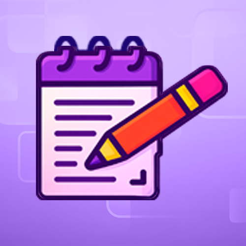
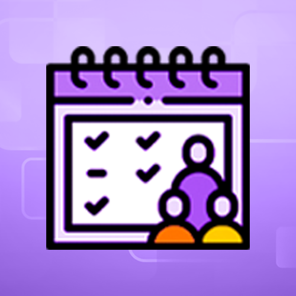
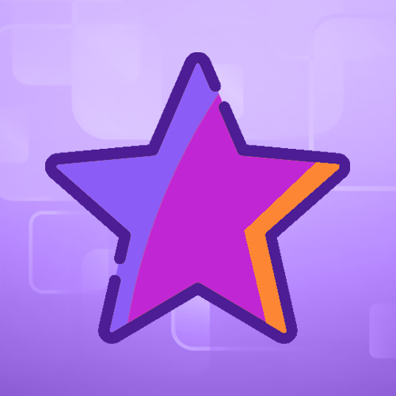

Contextualização de EaD, ensino híbrido,
ensino on-line, ensino presencial
e produção de cursos autoinstrucionais
Seja bem-vindo e bem-vinda!
A seguir veja algumas informações importantes
sobre esta aula.
Objetivos de aprendizagem
Ao final desta aula você poderá:
Conhecer as etapas de
desenvolvimento do curso em
tela, observando seu papel
de
estudante de acordo com a
metodologia, as formas de
interação e
participação,
assim como o processo de
avaliação.
Identificar os conceitos
principais abordados na aula:
educação a distância,
ensino online e presencial,
curso autoinstrucional,
atividades síncronas e
atividades assíncronas.
Identificar as linhas gerais do
fluxo de produção dos cursos
autoinstrucionais
da Fiocruz.
Apresentação
Seja bem-vinda(o) ao nosso curso!
É com alegria que recebemos você neste curso
autoinstrucional, especialmente
elaborado para subsidiar professores e
educadores na criação de conteúdo para
cursos online também autoinstrucionais.
Sabemos que o ensino a distância tem ganhado
cada vez mais espaço, e os cursos
autoinstrucionais — que não contam com tutoria
contínua — exigem planejamento
cuidadoso, clareza didática e foco na
aprendizagem autônoma. Pensando nisso,
este curso oferece orientações práticas,
exemplos e ferramentas úteis para apoiar
a produção de materiais educativos eficazes,
acessíveis e envolventes.
Fonte: Campus Virtual Fiocruz, por meio da
ferramenta Chatgpt.
Embora o curso traga elementos específicos do
processo de produção do
Campus Virtual Fiocruz, ele foi estruturado com
base em etapas amplamente
utilizadas por diversas instituições na criação
de cursos autoinstrucionais.
Por isso, o modelo aqui apresentado pode servir
como referência para outras
equipes pedagógicas envolvidas no
desenvolvimento de formações online.
Todo o conteúdo está organizado para que você
possa avançar em seu próprio
ritmo, com flexibilidade e autonomia. Esperamos
que esta jornada contribua
significativamente para o aprimoramento de suas
práticas pedagógicas e para
a construção de experiências de aprendizagem
mais acolhedoras e efetivas.
Desejamos a você um excelente percurso!
Curadoria
Cláudia Reis
Pedagoga do Campus Virtual Fiocruz
Introdução
Nesta aula convidamos você a pensar conosco
sobre o contexto em que os cursos
autoinstrucionais
são desenvolvidos na modalidade online,
sobretudo no Campus Virtual Fiocruz. Para isso,
buscamos
alinhar conceitos basilares para a compreensão
de todo o processo. Para iniciar nossa jornada,
apresentamos como o curso
vai se desenvolver e, em seguida, discutiremos
os conceitos de educação a distância, ensino
online e presencial, curso autoinstrucional,
atividades síncronas e atividades assíncronas.
Como vamos trabalhar?
Pretendemos desenvolver o curso utilizando
metalinguagem, ou seja, à medida
que o curso se desenvolve os participantes podem
identificar algumas das etapas
do processo de criação, desenvolvimento e
conclusão de cursos autoinstrucionais.
Cada aula contará com a
apresentação de conceitos e
propostas de reflexão
sobre
eles utilizando diferentes
linguagens e alguns exercícios
para fixação de
tudo
que foi discutido na aula.
Ao final do curso, você
realizará atividade avaliativa
com questões
objetivas e
receberá, no e-mail cadastrado
ao se inscrever, o seu
certificado de
qualificação.
Participe de todas as tarefas e
aproveite da melhor forma sua
experiência
autoinstrucional.
Você já ouviu falar de educação a distância,
aula online, atividades síncronas e
assíncronas, entre outros verbetes, sobretudo
depois do período pandêmico que
vivenciamos entre os anos de 2020 e 2023? Em
geral, quando determinados
conceitos são popularizados, ganham versões
bastante distintas.
Para alinhar esses conceitos, convidamos você a
assistir a animação a seguir:
Transcrição do vídeo
Este vídeo apresenta uma animação introdutória sobre conceitos relacionados à educação a distância, aulas online e atividades síncronas e assíncronas. A transcrição completa deve ser inserida aqui quando o roteiro final do vídeo estiver disponível.
Citação
"A Educação a Distância
(EaD) pode ser definida
como um conjunto de métodos
instrucionais, em que
alunos e tutores estão
distantes geograficamente,
mas têm comunicação
facilitada por intermédio
das
Tecnologias da Informação e
Comunicação (TICs)."
Salgado et al., 2014, p. 8
A importância
do planejamento
Desenho da produção
Como você viu, as etapas descritas na animação
oferecem uma panorâmica em
todo o fluxo de um curso autoinstrucional. A
seguir você conhecerá de forma
mais detalha não só os processos, mas igualmente
os profissionais envolvidos no
planejamento, criação, realização e
acompanhamento do curso.
Etapas e envolvidos na produção
de um curso autoinstrucional

Atores: Coordenação
A elaboração de um curso
no Campus Virtual
Fiocruz envolve etapas
integradas:
Termo de
Referência:
esboça módulos,
objetivos, estratégias e
recursos.
Preenchimento do
Latíssimo:
registro do curso no
sistema acadêmico no
Campus Virtual
FIOCRUZ.
Planejamento do
curso com definição
de:
metodologia, materiais e
referências
teóricas.
Formação da
equipe de
produção:
conteudistas, designers
e demais
profissionais
responsáveis pelo
desenvolvimento do
curso.
Aqui nasce o curso:
planejamento estratégico
e organização
inicial.
• Criação do conteúdo
bruto: conteudistas
elaboram o material das
aulas, seguido de
acompanhamento contínuo
da coordenação.
• Revisões e validações:
entre coordenação e
equipe para ajustes e
seleção final do
conteúdo.
• Construção dos
Storyboards e identidade
visual: organização do
conteúdo em roteiro e
linguagem visual para
orientar como o curso
será apresentado.
• Desenvolvimento de
recursos de
acessibilidade: criação
de recursos que garantem
que
todos possam acessar e
compreender o curso.
• Implementação no
Ambiente Virtual de
Aprendizagem (MOOC ou
Moodle): acesso e
utilização
pelos estudantes.
• Essa é a fase de construção do curso.
Atores: Coordenação,
comunicação,
técnicos.
O lançamento do curso
envolve duas ações
principais:
• Divulgação nas mídias
digitais: atrair
estudantes e fortalecer
a visibilidade da
formação.
• Publicação no ambiente
virtual:
disponibilização do
conteúdo para os alunos
inscritos.
O curso chega ao
público.

Atores: Coordenação,
Pedagogo, professor,
técnico
O acompanhamento do curso
inclui:
• Monitoramento de
inscrições
• Ajuste de vagas conforme
demanda
• Promoção do engajamento:
estratégias interativas e
pedagógicas conduzidas pela
coordenação e equipe
educacional, garantindo
participação ativa e melhor
experiência de
aprendizagem.
Garantir participação e boa
experiência.

Atores: Estudantes, pedagogo
e professor
A avaliação do curso
contempla dois
movimentos:
• Avaliação da aprendizagem:
análise qualitativa do
desempenho dos estudantes,
realizada
por meio de questões
interativas que permitem
acompanhar a aprendizagem e
garantir a
certificação, elaboradas
pelos conteudistas e
aplicadas pelos
desenvolvedores.
• Avaliação do curso: feita
por enquetes no início e no
final da formação, cuja
elaboração é da equipe
pedagógica.
• Análise dos resultados:
envolve todos os
participantes do projeto
para orientar
melhorias contínuas.
Melhorar continuamente o
curso.
Diante de todo o processo que se desenrola para
que um curso autoinstrucional
chegue a ser publicado, vários profissionais
encontram-se envolvidos nas diversas
etapas do processo.
Embora o curso traga uma visão geral sobre o
papel de cada participante em cada
fase do processo, vamos nos aprofundar sobre as
etapas que envolvem mais
precisamente o planejamento e a elaboração de
conteúdo para as aulas online.
Porém, para que não se perca a ideia do processo
educacional em questão,
consideramos importante aprofundar um pouco mais
as funções envolvidas em
cada etapa que delineamos acima.
Você chegou ao final da
primeira aula do Módulo 1
Nesta aula você conheceu como acontecerá a dinâmica do seu curso, os
principais conceitos que norteiam as práticas de ensino on-line, assim como o
passo a passo do processo de produção dos cursos autoinstrucionais.
Na próxima aula, você vai conhecer como elaborar
conteúdo para cursos
autoinstrucionais e dicas importantes para
transmitir conhecimento gerando
engajamento dos estudantes. Até lá!
Conferindo a aprendizagem
Questão
1
Objetivo: Identificar os conceitos
principais abordados na aula:
educação a distância,
ensino online e presencial, curso
autoinstrucional, atividades
síncronas e atividades assíncronas.
Os cursos autoinstrucionais têm ganhado
destaque nas estratégias de ensino a
distância
por promoverem autonomia e flexibilidade
na aprendizagem. Assinale a alternativa
que
melhor define o que caracteriza um curso
autoinstrucional.
Questão
2
Objetivo: Identificar as linhas
gerais do fluxo de produção dos
cursos autoinstrucionais da Fiocruz.
O Termo de Referência (TR) é um
documento essencial no planejamento e
organização
de cursos autoinstrucionais, pois
orienta toda a estrutura pedagógica e
técnica do
processo. Sobre o Termo de Referência
(TR) na produção de cursos
autoinstrucionais, é
correto afirmar que: